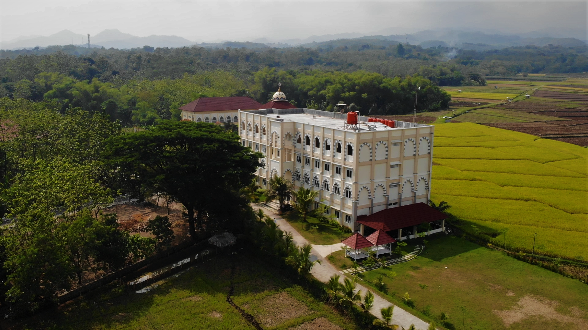
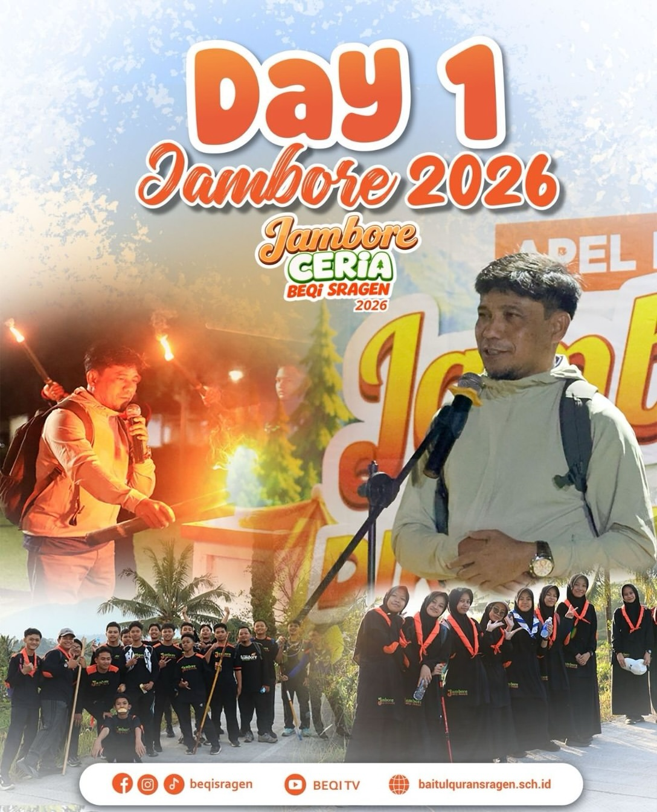
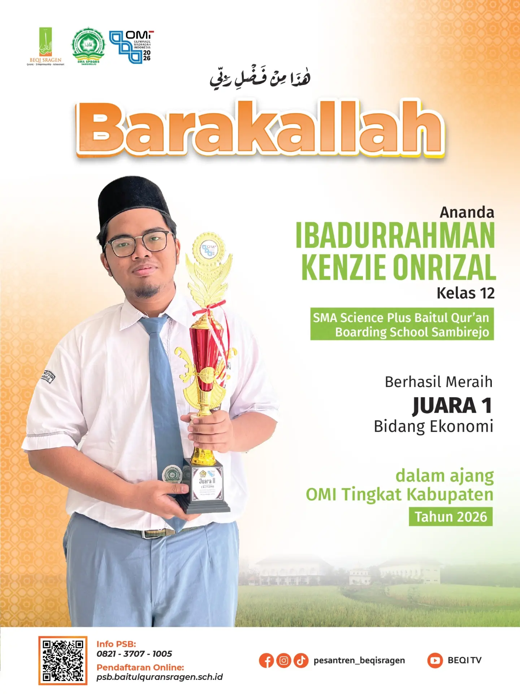
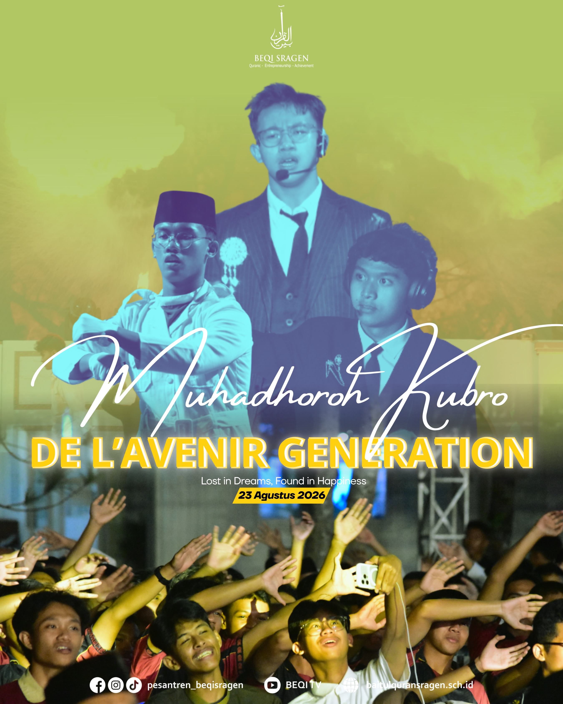

Mencetak Generasi Qur’ani, Mandiri & Berprestasi
Selamat datang di SMA Science Plus Baitul Quran Boarding School. Kami berkomitmen menyelenggarakan pendidikan berbasis Al-Qur'an, sains, dan kepedulian lingkungan.
Daftar Sekarang Kenali Sekolah Kami
Sambutan Kepala Sekolah
Selamat datang di SMA Science Plus Baitul Quran Boarding School. Kami berkomitmen untuk memberikan pendidikan yang Mencetak Generasi Qur’ani, Mandiri, Berprestasi & Berbudaya Lingkungan.
Ifa Ainur Rozi. Lc
Kepala Sekolah
Visi & Misi
Visi: Mencetak Generasi Qur’ani, Mandiri, Berprestasi & Berbudaya Lingkungan.
Misi kami: menyelenggarakan pendidikan yang berorientasi pada prestasi akademik, kemandirian, dan penanaman nilai-nilai Al-Qur'an.
Tahfidh Al-Quran
Mengembangkan kemampuan hafalan dan kecintaan terhadap Al-Qur'an secara intensif.
Prestasi Akademik & Sains
Pendidikan berorientasi prestasi melalui pembinaan khusus seperti Science Plus Olympiad Team (SPOT).
Kemandirian & Karakter
Membentuk santri yang mandiri, berjiwa entrepreneur, dan berakhlak mulia.
Berbudaya Lingkungan
Menerapkan kesadaran pelestarian lingkungan hidup di dalam kawasan boarding school.
Berita & Pengumuman
Kabar terbaru dari sekolah.

Longmarch 35 Km Jadi Pembuka Jambore 2026
Perjalanan longmarch sejauh 35 kilometer dari Sragen menuju Sekipan, Tawangmangu, menjadi penanda dibukanya Jambore Ceria 2026. Dengan ribuan peserta Jambore dan ratusan santri yang siap mengikuti perjalanan menantang ini, Pesantren Beqi Sragen memulai satu agenda besar tahunan, yaitu Jambore Ceria 2026

BARAKALLAH PRESTASI GEMILANG
Alhamdulillah dengan izin Allah SWT serta usaha yang telah ditempuh, santri SMA Science Plus Baitul Qur'an Boarding School Sambirejo berhasil meraih juara dalam ajang OMI tingkat Kabupaten

Muhadhoroh Kubro — De L’avenir Generation
Ikhwan - 23 Agustus 2026
Alhamdulillah, satu pagelaran seni karya santri telah sukses dilaksanakan🙌✨